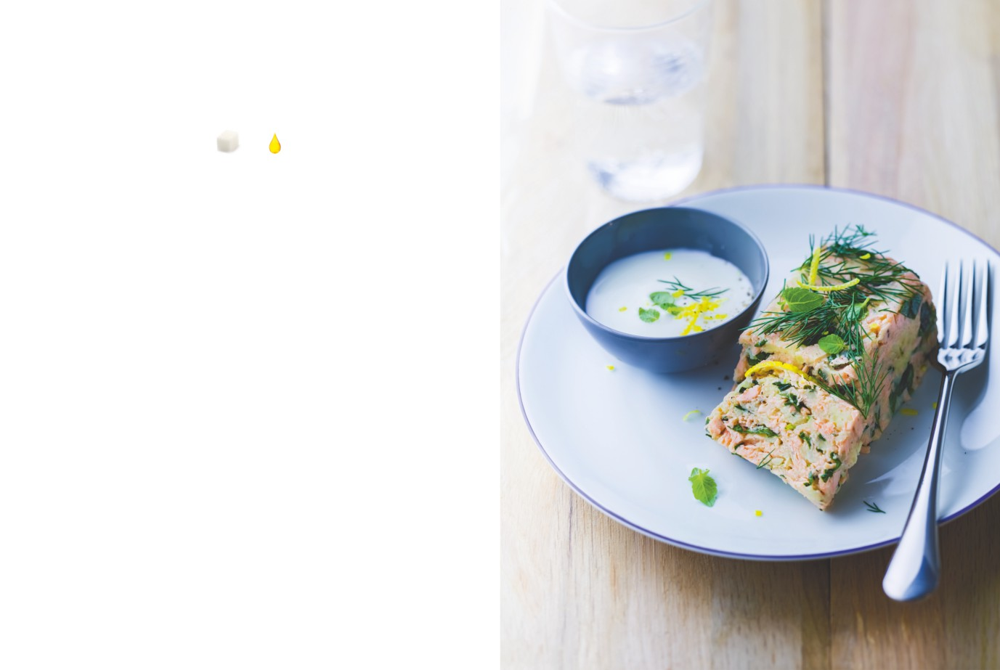

Pain de saumon
à la normande
APPORTS NUTRITIONNELS PAR PERSONNE
5
2
carrés
carrés
de sucre
de graisse
PRÉPARATION : 25 minutes / CUISSON : 20 minutes / REPOS : 12 heures
Ingrédients pour 4 personnes
1.
Pochez le saumon : plongez-le dans une sauteuse d’eau salée
et poivrée ; l’eau doit bien recouvrir le saumon. Faites chauffer
1 filet de saumon de 700 g environ,
sans arête
doucement, portez à frémissement sans hâter le processus.
Lorsque l’eau commence à frémir, retirez du feu et retirez le filet
500 g de pommes de terre non pelées,
bien lavées
de saumon avec une écumoire. Retirez la peau et émiettez le saumon.
Un bol d’herbes fraîches effeuillées
Il ne doit pas être trop cuit : il faut que la chair soit d’un rose soutenu
et hachées (ciboulette, estragon, persil,
à l’intérieur.
cerfeuil — gardez-en un peu pour servir)
2 échalotes finement hachées
2.
Pendant ce temps, faites cuire les pommes de terre entières
30 cl de yaourt onctueux
20 minutes à l’eau salée, puis épluchez-les. Écrasez-les à la fourchette
Cidre brut
avec toutes les herbes, les échalotes et un peu de cidre pour
Le jus de 1/2 citron
assouplir la texture. Ajoutez le saumon et encore un peu de cidre
Sel, poivre du moulin
de façon à obtenir une texture souple mais ferme.
3.
Tassez ce mélange dans un moule à cake antiadhérent,
recouvrez-le de film étirable et gardez-le 12 heures au réfrigérateur.
4.
Servez en tranches généreuses, accompagné de yaourt battu
avec un peu de cidre sec, sel, poivre, jus de citron et quelques
herbes fraîches hachées.
L’ASTUCE DE CHEF
Pour varier sur la base de cette recette traditionnelle
simplifiée, vous pouvez aussi utiliser de la truite de mer,
de la raie, du bar, du maigre ou du mulet, voire du rouget
barbet ou grondin.
Une macédoine de légumes frais (petits pois, carottes, haricots
verts, navets…) accompagne très bien ce pain de saumon.
24
Poissons et fruits de mer